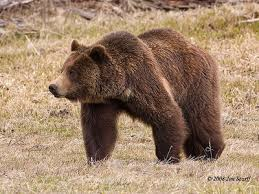
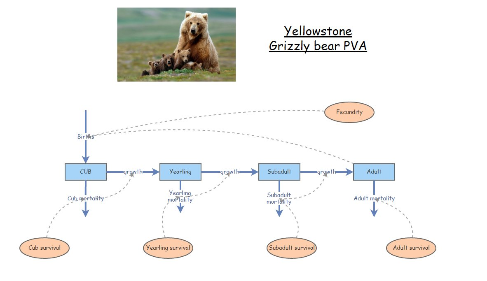
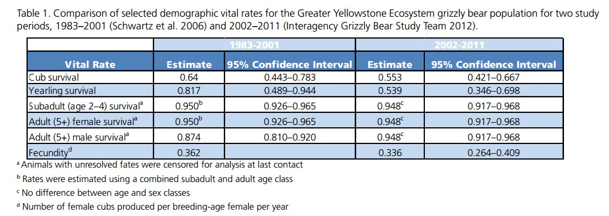
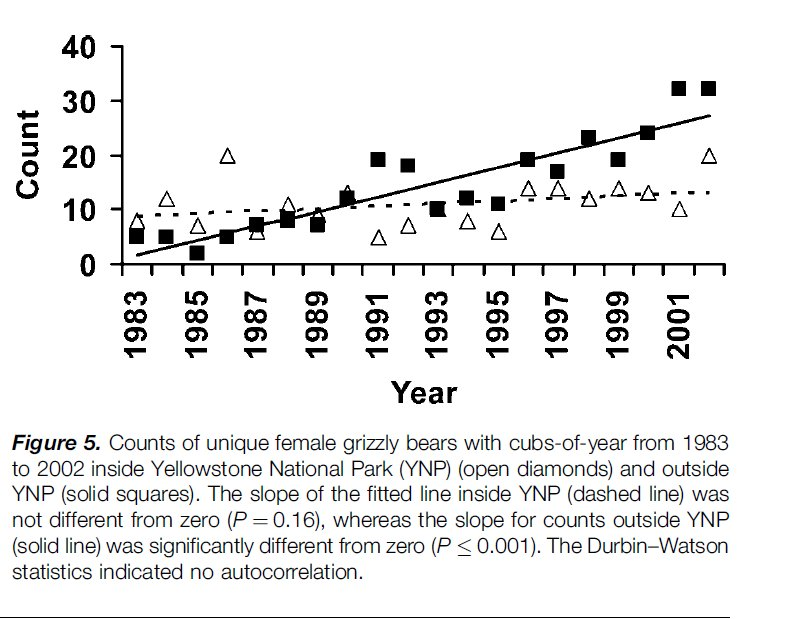

2 Grizzly bear PVA example
From a lecture by Kevin Shoemaker
2.1 PVA for Yellowstone grizzly bears
Our goal is to better understand the future of the grizzly bear population in Yellowstone park, and the processes that may regulate this population!
Let’s walk through the basic steps in building and running a PVA model:
2.1.0.1 Step 1: life history diagram
Based on the literature that we have read, we determine that there are four main stages in the grizzly bear life history: cub, yearling, subadult and adult! The adult stage is the only one that is reproductive!
Therefore, our conceptual life history diagram looks something like this!

You can clone the base grizzly bear model here. This model has not yet been parameterized!
2.1.0.2 Step 2: parameterize!
Let’s use this table to parameterize the population vital rates in our model!
This table actually has two alternative parameterizations, one representing the period from 1983 to 2001, and the other representing the period from 2002-2011.
Remember that we are not paying any attention to males!

The table is from this scientific report (alternative link)
What about population size? For any simulation we always need to initialize abundance!
From Schwartz et al 2006 we know that:
- Adult females represent approximately a quarter (25%) of the (female0.553) population.
- Total abundance of adult females in the greater Yellowstone park area was approximately 5 in 1983 and approximately 30 in 2002

Let’s use the initial (1983) abundances (all female!) to initialize our model:
Cubs: 5
Yearlings: 5
Subadults: 5
Adults: 5
Take a moment to parameterize the model!
2.1.0.3 Step 3: Spatial structure
We are ignoring spatial structure for this PVA!
2.1.0.4 Step 4: Simulate!
Okay, let’s run the model!
Again, you can clone the base grizzly bear model here if you haven’t already.
- Try running the model with the parameterization we discussed above. What do you notice? Is the population growing?
REALITY CHECK:
Q: Given that the population of adult females is known to have increased to around 30 individuals by the year 2002, is this model realistic??
- What if we configure the model to run for 100 years? What happens now?
Q: NOW do you think this is biologically realistic? Why or why not?
- Let’s change the parameterization to reflect the vital rates observed for the period 2002 to 2011 in the table:
In 2002 the population was more like 30 females- so let’s use the following parameterization!
Cubs: 30
Yearlings: 30
Subadults: 30
Adults: 30
Q: What do you notice about this model? Is it still growing? What about the overall rate of growth of the population?
Q: Which vital rates changed the most from 1983 to 2002?
Q: Can you think of any reason for this change?
2.1.0.4.1 Density-dependence
- Let’s implement a new process into our model- density-dependence!
We know that when the adult (female) population size was around 5, yearling survival was around 82%
We also know that when the adult (female) population size was around 30, yearling survival dropped to around 54%
Can you calculate a linear relationship between population size and yearling survival? When abundance increased by 25, yearling survival decreased by a little more than 25% (28% to be exact).
SLOPE: For each additional individual in the adult population, yearling survival decreased by 1.12.
INTERCEPT: When there were 5 adults, yearling survival was 81.7%. If there were 0 individuals in the adult population, yearling survival would be \(81.7 + 1.12\cdot 5\), which is 87.6%.
To convert back to a fraction, we divide this linear model by 100!
So the linear formula for computing yearling survival as a function of adult female abundance should be:
\(Surv_{yearling} = \frac{\left ( 87.6 - 1.12*N_{female} \right )}{100}\)
Let’s implement this density-dependent process in Insightmaker!
- Create a [Link] between female abundance and yearling survival.
- Open the equation editor for yearling survival, and input the linear equation above!
Run the model! What do you notice?
Q: What is the carrying capacity of this population? NOTE: you may need to run the model for longer than 100 years! NOTE: this is an emergent property of our new model!
Q: Do you notice an oscillatory pattern in abundance over time? NOTE: this is also an emergent property of our new model!
Q: Why is this type of model called density-dependent?
NOTE: if necessary, you can clone a density-dependent version of the grizzly model here
2.1.1 Grizzly bear exercise
Answer the following questions:
Run the grizzly bear PVA with and without the density-dependence process. In each case, what is the extinction risk after 100 years? In each case (with and without density-dependence), what is the approximate 95% confidence interval for the total population abundance after 100 years? Under which scenario is the conservation outlook best for grizzly bears in Yellowstone park?
For the density-independent model, what is the extinction risk if you changed yearling survival to its lower confidence limit in the above table (from 2002-2011)? Does the parameter uncertainty in the above table make a difference for the conservation outlook for this population?? NOTE: remember to change yearling survival back to 0.539 for the density-independent model!
In each case (with and without density-dependence), what is the extinction risk if you changed the initial abundance in each stage to 2? Given that a viable population is defined as a risk of extinction of < 10% over 100 years, can you identify a minimum viable population for this population?
HELPFUL HINTS:
- For the density-independent scenario, set the yearling survival rate to 0.54 – the value estimated from 2002 to 2011.
- All parameters aside from yearling survival should be the same between the two scenarios (so that the presence/absence of the density-dependence process is the only difference between the scenarios). I suggest you use all parameters estimated for the period 2002 to 2011, just to be consistent!
- For both scenarios, set the initial abundance to 5 for each stage (the numbers observed inside the park in 1983).
- Use the “sensitivity testing” option in the “Tools” menu to run multiple simulations (>100 replicates). You can assess extinction risk using the following formula:
\(\frac{extinctions}{replicates}\)
Where extinctions is the total number of replicates where the abundance declined to zero, and replicates is the total number of independent simulation replicates you ran. Similarly, you can assess the probability of failing to meet an important conervation criterion (e.g., population remaining above MVP) as the fraction of replicates that failed to meet the specified criterion.